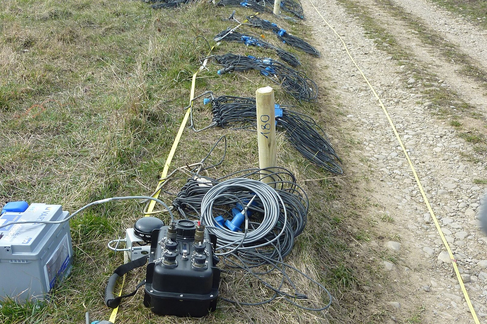
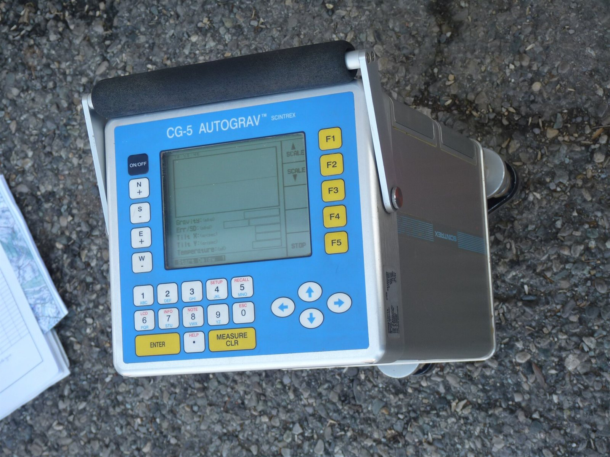

Nosotros
Porque cada proyecto es una nueva tierra.
NUSCAA-Geoservicios ofrece estudios del subsuelo con rigor técnico y trato cercano. Quien te cotiza es quien planea, mide e interpreta tu proyecto.

La especialista
Hola, soy Brenda Pamela
Geofísica de formación y de campo. Dirijo NUSCAA-Geoservicios después de trabajar en estudios de mecánica de suelos y cimentaciones, donde vi de cerca lo que más necesita un cliente: respuestas claras, a tiempo y de alguien que conoce el proyecto.
- Atención directa. Hablas con la persona que hará el estudio, no con un vendedor.
- Criterio técnico honesto. Si un método no resuelve tu problema, te lo digo antes de cotizarlo.
- Informes que se entienden. Escritos para que ingenieros, constructores y autoridades tomen decisiones.
- Equipo calibrado y control de calidad en campo en cada levantamiento.
Principios
Cómo trabajamos cada proyecto
Puntualidad
Fechas de campo y de entrega acordadas por escrito y cumplidas.
Enfoque en el proyecto
El estudio se diseña a partir de lo que se va a construir o decidir, no al revés.
Datos verificables
Entregamos datos crudos y procesados; cualquier colega puede revisar el trabajo.
Seguridad en campo
Equipo de protección, señalización y respeto a los protocolos del sitio.
Cobertura y equipo
Donde esté tu proyecto
Trabajamos en toda la República Mexicana. Los traslados y viáticos se detallan en la cotización, sin sorpresas.
Contamos con equipo para los cinco métodos: resistivímetro multielectrodo, sismógrafo multicanal con geófonos, estación de ruido ambiental, georradar, magnetómetro y gravímetro. Para proyectos especiales nos apoyamos en equipo certificado en renta.
Ver todos los estudios
¿Trabajamos juntos?
Envíanos los datos de tu proyecto y te respondemos con una propuesta técnica y económica.